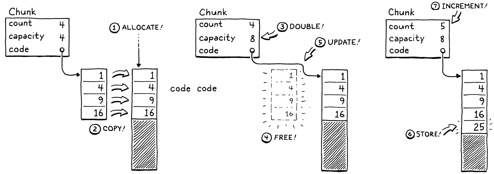
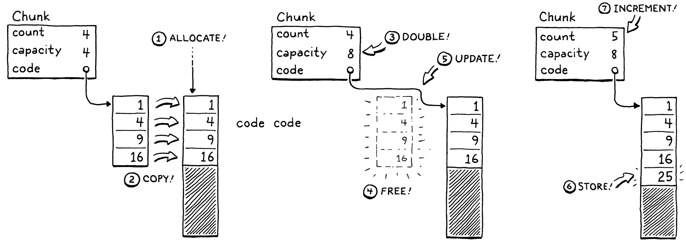

Why compiler Design
Learn forward engineering
Learn C
Become language hacker
Become Reverse engineer
types of Interpreters

Single-pass compilers
Tree-walk interpreters
Transpilers
Just-in-time compilation
The Lox Language
A High-Level Language
Dynamic typing
Automatic memory management
Closures
object oriented
Inheritance
Lexer or scanner
converts Source code into tokens

A Lexical Grammar for Lox
A virtual Machine
#ifndef clox_vm_h
#define clox_vm_h
#include "chunk.h"
typedef struct {
Chunk* chunk;
} VM;
void initVM();
void freeVM();
#endif
Chunks of ByteCode
Chunks implementation logic
 
